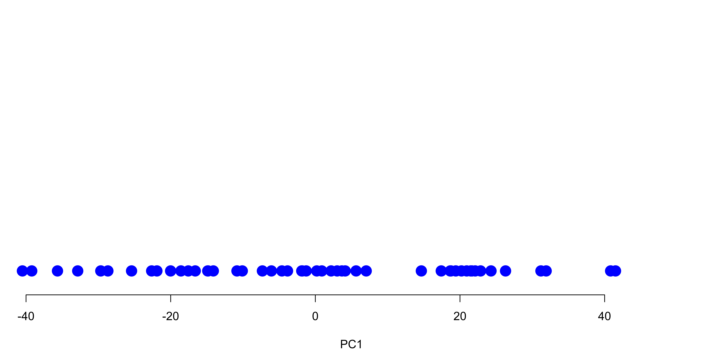

Dimension Reduction
MSSC 6250 Statistical Machine Learning
One-Dimension (1D) Number line

One-Dimension (1D) Number line: Uniform students

1D Number line: Non-uniform students

Two-Dimensions (2D) X-Y Scatter plot: High Correlated
English and Math measure an overall academic performance.

Two-Dimensions (2D) X-Y Scatter plot: No correlated
English and Math measure different abilities.

Three-Dimensions (3D) X-Y-Z Scatter plot

Four-Dimension (4D) X-Y-Z-? Scatter plot

How about Pair Plots?

Variation mostly from One Variable
- Almost all of the variation in the data is from left to right.

Variation mostly from One Variable
- If we flattened the data, the graph would not look much different.

Variation mostly from One Variable
- If we flattened the data, we could graph it with a 1D number line!

Variation mostly from One Variable
- Both graphs say “the important variation is left to right.”

PCA Illustration: 2 Variable Example

Step 1: Shift (or standardize) the Data
- So the two variables have both mean 0. If the variables are measured in a different unit, consider standardization, \(\frac{x_i - \bar{x}}{s_x}\).
- Shifting does not change how the data points are positioned relative to each other.


Step 2: Find a Line that Fits the Data the Best
- Start with a line going through the origin.
- Rotate the line until it fits the data as well as it can, given that it goes through the origin.

Step 2: Find a Line that Fits the Data the Best
- Start with a line going through the origin.
- Rotate the line until it fits the data as well as it can, given that it goes through the origin.

Step 2: Find a Line that Fits the Data the Best
- Start with a line going through the origin.
- Rotate the line until it fits the data as well as it can, given that it goes through the origin.

The Meaning of the Best line
Principal Component 1 (PC1): maximizes the variance of the projected points.
-
PC1 is the line in the Eng-Math space that is closest to the \(n\) observations
- PC1 minimizes the sum of squared distances between the data points and the PC1.
PC1 is the best 1D representation of the 2D data

The Meaning of the Best line

PC1 and PC2
- The data points are also spread out a little above and below the PC1.
- There are some variation that is not explained by the PC1.
- Find the second PC, PC2, that
- explains the remaining variation
- is the line through the origin and perpendicular to PC1.

Linear Combinations

- PC1 = 0.68 \(\times\) English \(+\) 0.74 \(\times\) Math
- PC2 = 0.74 \(\times\) English \(-\) 0.68 \(\times\) Math
- PC1 is like an overall intelligence index as it is a weighted average combining verbal and quantitative abilities.
- PC2 accounts for individual difference in English and Math scores.
- \(0.68^2 + 0.74^2 = 1\) (Pythagorean theorem)
- The combination weights 0.68, 0.74, etc are called PC loadings.
Rotate Everything so that PC1 is Horizontal
1D representation
- PC1 is our 1D number line that explains the most variation contained in 2D data using a 1D line.
- Points on the PC1 are the projected points of data onto PC1.

2D representation
- The new coordinates PC1 and PC2 are ordered by variation size of the English and Math scores

2D Representation of the 4D data
PC1 PC2 PC3 PC4
Wisconsin -2.06 -0.61 -0.14 -0.18
Wyoming -0.62 0.32 -0.24 0.16Higher value of PC1 means higher crime rates (roughly).
Higher value of PC2 means higher level of urbanization (roughly).

2D Representation of the 4D data: biplot
biplot(pca_output, xlabs = state.abb,
scale = 0)- Top axis: PC1 loadings
- Right axis: PC2 loadings
- Red arrows: PC1 and PC2 loading vector, e.g., (0.28, -0.87) for
UrbanPop. - Crime-related variables (
Assualt,MurderandRape) are located close to each other. -
UrbanPopis far from the other three. -
Assualt,MurderandRapeare more correlated, andUrbanPopis less correlated with the other three.

Scree Plot
Look for a point at which the proportion of variance explained by each subsequent PC drops off.

Scaling the Variables
apply(USArrests, 2, var) Murder Assault UrbanPop Rape
19 6945 210 88 If we perform PCA on the unscaled variables, PC1 loading vector will have a large loading for
Assault.When all the variables are of the same type, no need to scale the variables.


pls::pcr()
library(pls)
set.seed(1)
pcr.fit <- pcr(Salary ~ ., data = Hitters,
subset = train,
scale = TRUE, validation = "CV")
validationplot(pcr.fit, val.type = "MSEP")
Other Dimension Reduction (Latent Variable) Methods
Kernel Principal Component Analysis https://ml-explained.com/blog/kernel-pca-explained
Probabilistic PCA
Factor Analysis
Autoencoders
t-SNE (t-distributed stochastic neighbor embedding)
UMAP (Uniform manifold approximation and projection)